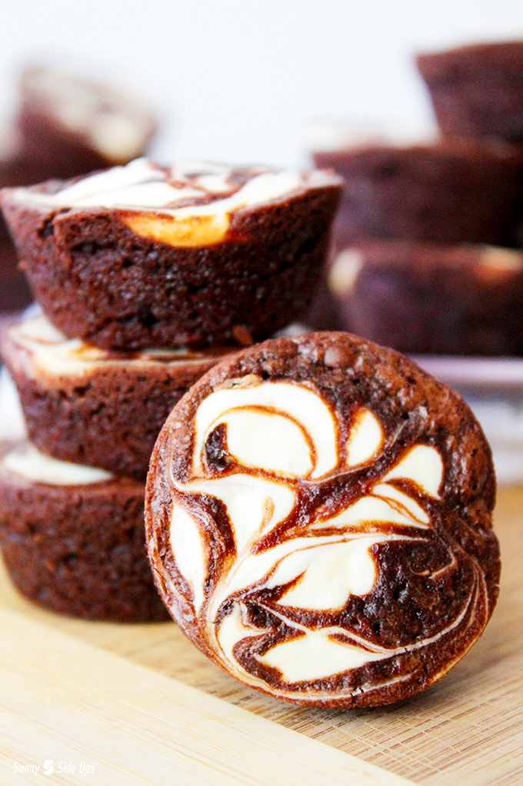

Time: 27 minutes
Cost: $15.00
Servings: 2-4
1. Preheat the oven to 350 degrees F.
2. In a large bowl, whisk together the eggs, baking cocoa, salt, baking powder, espresso mixed with water, and vanilla until well combined.
3. Stir in the sugar and melted butter until well combined, then stir in the flour. (A firm rubber spatula works best.) Set brownie batter aside.
4. In a separate bowl, prepare the cheesecake filling by stirring together the cream cheese, sugar and egg yolk until well combined. Transfer the mixture to a pastry bag or plastic bag.
5. Grease a non-stick mini-muffin pan with cooking spray or butter and then spoon a tablespoon of brownie batter into the greased cups. Pipe a generous amount of cheesecake filling atop the brownie batter, and then top off each cup with an additional teaspoon of brownie batter.
6. Bake for about 12 minutes, or until a toothpick inserted comes out clean.
7. Let brownie cool for about 10 minutes.
Source: http://sunnysideups.org/easy-brownie-cheesecake-bites/